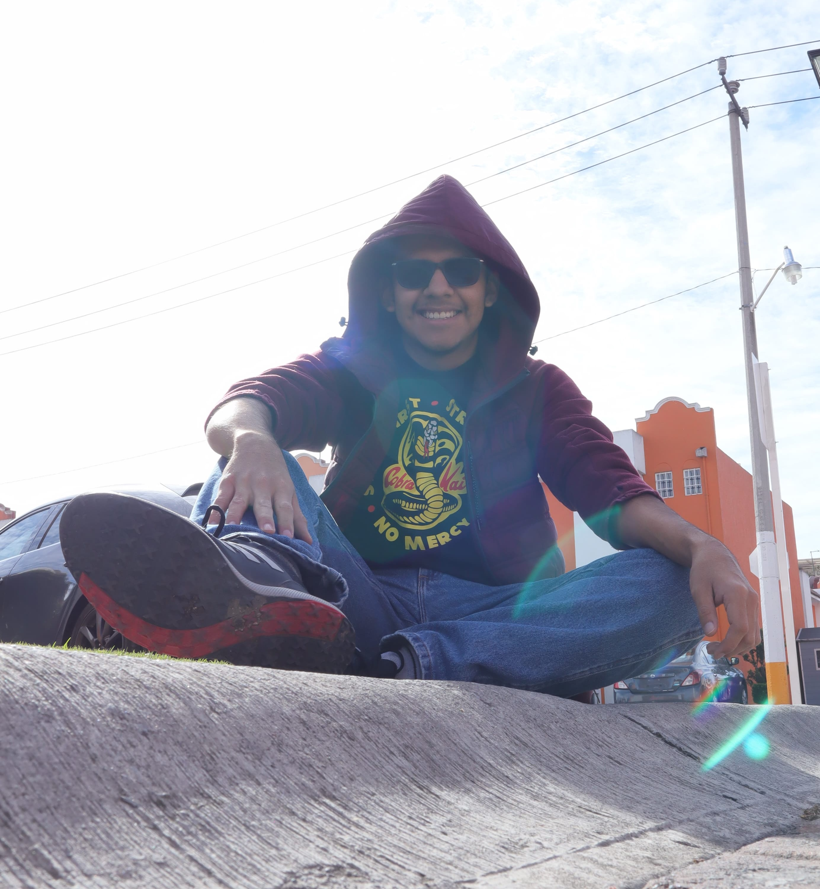

INDIE GAME

CYBERPUNK SNAKE
Versión moderna del clásico de Snake con temática cyberpunk y estética neón, con una nueva fruta en juego.

>> SELECT PLAYER_CLASS: FRONTEND DEV
>> LOADING MASTER IN MULTIMEDIA DESIGN...
>> SPECIAL SKILL: DART & PYTHON
>> READY TO CODE.